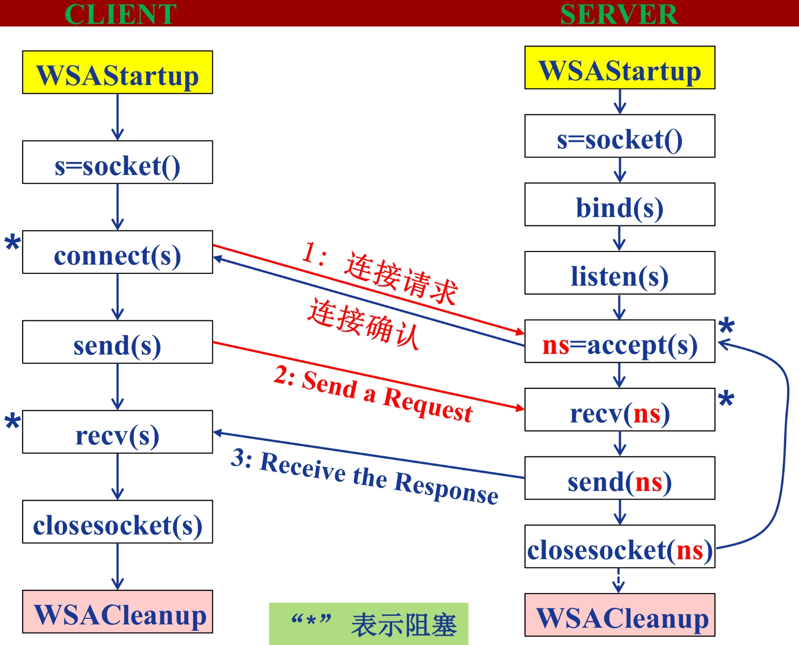

Python 学习
小知识集合
__name__是当前模块名，当模块被直接运行时模块名为__main__。这句话表明当模块被直接运行时，以下代码将被运行，当模块是被导入时，代码块不被运行。python2 中可以使用python3 的语法，需要在代码前面加上
from __future__ import XXX，例如，用到python3中的print函数用法时，可以在代码前面写上from __future__ import print_function。pip install packages可使用国内镜像下载。xxxxxxxxxx61pip install -i https://pypi.tuna.tsinghua.edu.cn/simple packages2## 设置默认packages下载地址(此处选用的清华的镜像)3pip install pip -U4pip config set global.index-url https://pypi.tuna.tsinghua.edu.cn/simple5## 临时用镜像更新pip6pip install -i https://pypi.tuna.tsinghua.edu.cn/simple pip -Umap()函数：根据提供的函数对指定序列做映射。第一个参数function以参数序列中的每一个元素调用function函数，返回包含每次function函数返回值的新列表。xxxxxxxxxx21map(function, iterable, ...)2# function 函数 iterable 一个或多个序列
异常处理
- 异常即是一个事件，该事件会在程序执行过程中发生，影响了程序的正常执行。
- 一般情况下，在 Python 无法正常处理程序时就会发生一个异常。
捕捉异常可以使用 try/except 语句。
try语句的工作原理如下。
- 首先，执行
try子句 （try和except关键字之间的（多行）语句）。 - 如果没有异常发生，则跳过
except子句并完成try语句的执行。 - 如果在执行
try子句时发生了异常，则跳过该子句中剩下的部分。然后，如果异常的类型和except关键字后面的异常匹配，则执行except子句 ，然后继续执行try语句之后的代码。 - 如果发生的异常和
except子句中指定的异常不匹配，则将其传递到外部的try语句中；如果没有找到处理程序，则它是一个 未处理异常，执行将停止并显示如下所示的消息。
例子:
xxxxxxxxxx241>>> try:2 x = int(input('请输入:'))3except ValueError:4 print('abcde') ### ValueError异常，执行该部分5else:6 print('12345') ### 无异常，则跳过 except 部分而执行该 else 部分78请输入:591234510请输入:a11abcde1213>>> try:14 x = int(input('请输入:'))15except NameError:16 print('abcde')17else:18 print('12345')1920请输入:a21Traceback (most recent call last):22 File "<pyshell#29>", line 2, in <module>23 x = int(input())24ValueError: invalid literal for int() with base 10: 'a'
不带任何异常类型
你可以不带任何异常类型使用except，如下实例：
xxxxxxxxxx61try:2 正常的操作3except:4 发生异常，执行这块代码5else:6 如果没有异常执行这块代码`以上方式 try-except 语句捕获所有发生的异常。但这不是一个很好的方式，我们不能通过该程序识别出具体的异常信息。因为它捕获所有的异常。
带多种异常类型
你也可以使用相同的 except 语句来处理多个异常信息，如下所示：
xxxxxxxxxx61try:2 正常的操作3except(Exception1[, Exception2[,...ExceptionN]]):4 发生以上多个异常中的一个，执行这块代码5else:6 如果没有异常执行这块代码
try-finally 语句
try-finally 语句无论是否发生异常都将执行最后的代码。
xxxxxxxxxx51try:2 <语句>3finally:4 <语句> #退出try时总会执行5raise例子:
xxxxxxxxxx281>>> try:2 x = int(input('请输入:'))3except ValueError:4 print('abcde')5else:6 print('12345')7finally:8 print('hello world')910请输入:a11abcde12hello world1314>>> try:15 x = int(input('请输入:'))16except NameError:17 print('abcde')18else:19 print('12345')20finally:21 print('hello world')2223请输入:a24hello world25Traceback (most recent call last):26 File "<pyshell#38>", line 2, in <module>27 x = int(input('请输入:'))28ValueError: invalid literal for int() with base 10: 'a'
raise 语句
raise 语句允许用户自行强制发生指定的异常。
例如:
xxxxxxxxxx51>>> raise NameError('Hello Wrong World')2Traceback (most recent call last):3 File "<pyshell#41>", line 1, in <module>4 raise NameError('Hello Wrong World')5NameError: Hello Wrong World
python 标准异常
| 异常名称 | 描述 |
|---|---|
| BaseException | 所有异常的基类 |
| SystemExit | 解释器请求退出 |
| KeyboardInterrupt | 用户中断执行(通常是输入^C) |
| Exception | 常规错误的基类 |
| StopIteration | 迭代器没有更多的值 |
| GeneratorExit | 生成器(generator)发生异常来通知退出 |
| StandardError | 所有的内建标准异常的基类 |
| ArithmeticError | 所有数值计算错误的基类 |
| FloatingPointError | 浮点计算错误 |
| OverflowError | 数值运算超出最大限制 |
| ZeroDivisionError | 除(或取模)零 (所有数据类型) |
| AssertionError | 断言语句失败 |
| AttributeError | 对象没有这个属性 |
| EOFError | 没有内建输入,到达EOF 标记 |
| EnvironmentError | 操作系统错误的基类 |
| IOError | 输入/输出操作失败 |
| OSError | 操作系统错误 |
| WindowsError | 系统调用失败 |
| ImportError | 导入模块/对象失败 |
| LookupError | 无效数据查询的基类 |
| IndexError | 序列中没有此索引(index) |
| KeyError | 映射中没有这个键 |
| MemoryError | 内存溢出错误(对于Python 解释器不是致命的) |
| NameError | 未声明/初始化对象 (没有属性) |
| UnboundLocalError | 访问未初始化的本地变量 |
| ReferenceError | 弱引用(Weak reference)试图访问已经垃圾回收了的对象 |
| RuntimeError | 一般的运行时错误 |
| NotImplementedError | 尚未实现的方法 |
| SyntaxError | Python 语法错误 |
| IndentationError | 缩进错误 |
| TabError | Tab 和空格混用 |
| SystemError | 一般的解释器系统错误 |
| TypeError | 对类型无效的操作 |
| ValueError | 传入无效的参数 |
| UnicodeError | Unicode 相关的错误 |
| UnicodeDecodeError | Unicode 解码时的错误 |
| UnicodeEncodeError | Unicode 编码时错误 |
| UnicodeTranslateError | Unicode 转换时错误 |
| Warning | 警告的基类 |
| DeprecationWarning | 关于被弃用的特征的警告 |
| FutureWarning | 关于构造将来语义会有改变的警告 |
| OverflowWarning | 旧的关于自动提升为长整型(long)的警告 |
| PendingDeprecationWarning | 关于特性将会被废弃的警告 |
| RuntimeWarning | 可疑的运行时行为(runtime behavior)的警告 |
| SyntaxWarning | 可疑的语法的警告 |
| UserWarning | 用户代码生成的警告 |
@装饰器
python 中@函数装饰器的工作原理。该部分参考来源。
假设用 函数装饰器去装饰 函数，如下所示：
xxxxxxxxxx101#funA 作为装饰器函数2def funA(fn):3 代码... 4 fn() # 执行传入的fn参数5 代码... 6 return '...'78def funB():10 代码实际上，上面程序完全等价于下面的程序：
xxxxxxxxxx101def funA(fn):2 代码...3 fn() # 执行传入的fn参数4 代码... 5 return '...'6 7def funB():8 代码...9 10funB = funA(funB)通过比对以上 2 段程序不难发现，使用函数装饰器 A() 去装饰另一个函数 B()，其底层执行了如下 2 步操作：
- 将 B 作为参数传给 A() 函数；
- 将 A() 函数执行完成的返回值反馈回 B。
例如：
举个实例：
xxxxxxxxxx181#funA 作为装饰器函数2>>>def funA(fn):3 print("人生苦短，我用Python")4 fn() # 执行传入的fn参数5 print("Hello wolrd")6 return "Good Ending"78>>>@funA9def funB():10 print("学习 Python")11 12##程序运行结果13人生苦短，我用Python14学习 Python15Hello World1617>>> funB18Good Ending
进程和线程
进程是资源分配的最小单位，线程是CPU调度执行的最小单位
进程
进程(Process)是资源分配的最小单位，具有一定功能的程序 关于某个数据集合上的一次运行活动，进程是系统进行资源分配和调度的一个独立单位。每个进程都有自己的独立内存空间，不同进程通过进程间通信来通信。由于进程占独立内存，所以进程间的切换开销大。
线程
线程(Thread)是进程的一个实体，是独立运行和独立调度的基本单位(CPU上真正运行的是线程)。
- 线程之间的通信更方便，同一进程下的线程共享全局变量，静态变量等数据。而进程之间的通信需要以 通信的方式进行
- 线程的调度与切换比进程快很多，同时创建一个线程的开销也比进程要小很多
- 多进程程序更稳定，多线程程序只要有一个线程死掉，整个进程也死掉了。
网上有些很形象的比喻：阮一峰的博客，转载自知乎用户biaodianfu
做个简单的比喻：进程=火车，线程=车厢
- 线程在进程下行进（单纯的车厢无法运行）
- 一个进程可以包含多个线程（一辆火车可以有多个车厢）
- 不同进程间数据很难共享（一辆火车上的乘客很难换到另外一辆火车，比如站点换乘）
- 同一进程下不同线程间数据很易共享（A车厢换到B车厢很容易）
- 进程要比线程消耗更多的计算机资源（采用多列火车相比多个车厢更耗资源）
- 进程间不会相互影响，一个线程挂掉将导致整个进程挂掉（一列火车不会影响到另外一列火车，但是如果一列火车上中间的一节车厢着火了，将影响到所有车厢）
- 进程可以拓展到多机，进程最多适合多核（不同火车可以开在多个轨道上，同一火车的车厢不能在行进的不同的轨道上）
- 进程使用的内存地址可以上锁，即一个线程使用某些共享内存时，其他线程必须等它结束，才能使用这一块内存。（比如火车上的洗手间）－"互斥锁"
- 进程使用的内存地址可以限定使用量（比如火车上的餐厅，最多只允许多少人进入，如果满了需要在门口等，等有人出来了才能进去）－“信号量”
Multiprocessing 库
multiprocessing 是一个用与 threading 模块相似API的支持产生进程的包。multiprocessing 包同时提供本地和远程并发，使用子进程代替线程，有效避免 Global Interpreter Lock 带来的影响。
xxxxxxxxxx101from multiprocessing import Pool23def f(x):4 return x*x56if __name__ == '__main__':7 with Pool(5) as p:8 print(p.map(f, [1, 2, 3]))9 10>>> [1,4,9] #输出Process类
xxxxxxxxxx11class multiprocessing.Process(group=None, target=None, name=None, args=(), kwargs={}, *, daemon=None)在 multiprocessing中，通过创建一个 Process 对象然后调用它的 start() 方法来生成进程。 Process 和 threading.Thread API 相同。 一个简单的多进程程序示例是:
xxxxxxxxxx91from multiprocessing import Process23def f(name):4print('hello', name)56if __name__ == '__main__':7p = Process(target=f, args=('bob',))8p.start()9p.join()
要显示所涉及的各个进程ID，这是一个扩展示例:
xxxxxxxxxx291from multiprocessing import Process2import os34def info(title):5 print(title)6 print('module name:', __name__)7 print('parent process:', os.getppid())8 print('process id:', os.getpid())910def f(name):11 info('function f')12 print('hello', name)1314if __name__ == '__main__':15 info('main line')16 p = Process(target=f, args=('bob',))17 p.start()18 p.join()19 20# 输出21main line22module name: __main__23parent process: 1499324process id: 2627125function f26module name: __main__27parent process: 2627128process id: 2676229hello bob进程间通信
Process之间肯定是需要通信的，操作系统提供了很多机制来实现进程间的通信。Python 的 multiprocessing 模块包装了底层的机制，提供了Queue、Pipes等多种方式来交换数据。
Threading 库
Python3 线程中常用的两个模块为：
- _thread
- threading(推荐使用)
xxxxxxxxxx11threading.Thread(group=None, target=None, name=None, args=(), kwargs={})下面是threading.Thread提供的线程对象方法和属性：
- start()：创建线程后通过start启动线程，等待CPU调度，为run函数执行做准备；
- run()：线程开始执行的入口函数，函数体中会调用用户编写的target函数，或者执行被重载的run函数；
- join([timeout])：阻塞挂起调用该函数的线程，直到被调用线程执行完成或超时。通常会在主线程中调用该方法，等待其他线程执行完成。
- name、getName()&setName()：线程名称相关的操作；
- ident：整数类型的线程标识符，线程开始执行前（调用start之前）为None；
- isAlive()、is_alive()：start函数执行之后到run函数执行完之前都为True；
- daemon、isDaemon()&setDaemon()：守护线程相关；
浅复制和深复制
对于数字/字符/元组这种不可变值，增加改变等操作都会改变它的引用。对于字典/列表/集合这种可变值，增加删除等操作都不会改变它的引用。
xxxxxxxxxx271>>> a = 123 #数字int2>>> id(a)31407361474560804>>> a = 12345>>> id(a)62612593870032 #引用已改变78>>> a = 'string' #字符string9>>> id(a)10261262363544011>>> a += 'inhao'12>>> id(a)132612626078256 #引用已改变1415>>> a = [1,2,3] #列表list16>>> id(a)17261262598132018>>> a.append(4)19>>> id(a)202612625981320 #引用不改变2122>>> a = {1:2} #字典dict23>>> id(a)24261259402242425>>> a[2]=326>>> id(a)272612594022424 #引用不改变- 直接赋值：其实就是对象的引用（别名）。
- 浅拷贝(copy)：拷贝父对象，不会拷贝对象的内部的子对象。
- 深拷贝(deepcopy)： copy 模块的 deepcopy 方法，完全拷贝了父对象及其子对象。
例子：
xxxxxxxxxx151>>> import copy2>>> a = [1,2,3,['a','b']]3>>> b = a #赋值4>>> c = copy.copy(a) #浅复制5>>> d = copy.deepcopy(a) #深复制6>>> a.append(4)7>>> a[3].append('c')8>>> a9[1, 2, 3, ['a', 'b', 'c'], 4]10>>> b11[1, 2, 3, ['a', 'b', 'c'], 4]12>>> c13[1, 2, 3, ['a', 'b', 'c']]14>>> d15[1, 2, 3, ['a', 'b']]这里的列表b浅复制，只是复制了列表a中的引用，因为 a.append(4) 在原来的 a 中 ‘4’ 元素没有引用，所以列表 b 不会改变。（注意，如果输入命令 a[0]=1996，因为它原来复制的是 a[0] 的引用，而数值改变即 a[0]=1996 那么内存地址也变化了，所以列表 b 中仍不会改变），而列表 b 中的列表引用没有改变，还是列表 a 中列表['a','b']的引用，所以列表 a 中的列表改变，则列表 b 也随之改变。

xxxxxxxxxx701>>> a = b = 123 #数字2>>> id(a),id(b)3(140736147456080, 140736147456080)4>>> b = 19965>>> a,b,id(a),id(b)6(123, 1996, 140736147456080, 2991010350544)7>>> a = b = '123' #字符8>>> id(a),id(b)9(2991010494960, 2991010494960)10>>> b = '1996'11>>> a,b,id(a),id(b)12('123', '1996', 2991010494960, 2991010495344)1314>>> a = '你好啊' #字符15>>> b = a16>>> c = a[:]17>>> import copy18>>> d = copy.copy(a)19>>> e = copy.deepcopy(a)20>>> a,b,c,d,e21('你好啊', '你好啊', '你好啊', '你好啊', '你好啊')22>>> id(a),id(b),id(c),id(d),id(e)23(2991008171280, 2991008171280, 2991008171280, 2991008171280, 2991008171280)2425>>> a = 1996 #数字26>>> b = a27>>> c = copy.copy(a)28>>> d = copy.deepcopy(a)29>>> a,b,c,d30(1996, 1996, 1996, 1996)31>>> id(a),id(b),id(c),id(d)32(2991010350480, 2991010350480, 2991010350480, 2991010350480)3334>>> a = [1,2,3] #列表35>>> b = a36>>> c = copy.copy(a)37>>> d = copy.deepcopy(a)38>>> id(a),id(b),id(c),id(d)39(2315724705288, 2315724705288, 2315722286984, 2315724767112)40>>> a = {1,2,3} #集合41>>> b = a42>>> c = copy.copy(a)43>>> d = copy.deepcopy(a)44>>> id(a),id(b),id(c),id(d)45(2315724733576, 2315724733576, 2315724873800, 2315724874248)46>>> a = {1:23} #字典47>>> b = a48>>> c = copy.copy(a)49>>> d = copy.deepcopy(a)50>>> id(a),id(b),id(c),id(d)51(2315721054232, 2315721054232, 2315722298776, 2315724869704)5253>>> a = 123 #数字54>>> b = a55>>> c = copy.copy(a)56>>> d = copy.deepcopy(a)57>>> id(a),id(b),id(c),id(d)58(140736147456080, 140736147456080, 140736147456080, 140736147456080)59>>> a = '123' #字符60>>> b = a61>>> c = copy.copy(a)62>>> d = copy.deepcopy(a)63>>> id(a),id(b),id(c),id(d)64(2315724810096, 2315724810096, 2315724810096, 2315724810096)65>>> a = (1,2,3) #元组66>>> b = a67>>> c = copy.copy(a)68>>> d = copy.deepcopy(a)69>>> id(a),id(b),id(c),id(d)70(2315724708904, 2315724708904, 2315724708904, 2315724708904)
== 和 is
xxxxxxxxxx141>>> a, b = 1, 1 #数字2>>> a == b3True4>>> a is b5True6>>> a, b= [1,2,3], [1,2,3] #列表list7>>> a is b8False9>>> a, b = (1,2,3), (1,2,3) #元组tuple10>>> a is b11False12>>> a, b = '123', '123' #字符string13>>> a is b14True尽管 value 一样，但当 a 和 b 是 tuple，list，dict 或 set 型时，a is b为 False。
数字和字符串时，
a is b为True.- 对于数字：python 初始化时会定义数字范围是-5～256的数值。在这个范围内的数值已经分配好了统一的内存地址。
- 对于字符串：无论多么长的字符串都满足，但是不能有特殊字符。
内存管理/垃圾回收
Python 内部使用引用计数，来保持追踪内存中的对象，Python 内部记录了对象有多少个引用，即引用计数，当对象被创建时就创建了一个引用计数，当对象不再需要时，这个对象的引用计数为0时，它被垃圾回收。
测试占用内存的例子：
xxxxxxxxxx211import os2import psutil3# 显示当前 python 程序占用的内存大小4def show_memory_info(hint):5 pid = os.getpid()6 p = psutil.Process(pid)7 info = p.memory_full_info()8 memory = info.uss / 1024. / 10249 print('{} memory used: {} MB'.format(hint, memory))10 11def func():12 show_memory_info('initial')13 a = [i for i in range(10000000)]14 show_memory_info('after a created')15 func()16 show_memory_info('finished')1718>>> #输出结果19initial memory used: 47.19140625 MB20after a created memory used: 433.91015625 MB21finished memory used: 48.109375 MB
引用计数
查看一个对象的引用计数
xxxxxxxxxx31import sys2a = 'Hello World'3sys.getrefcount(a)可以查看a对象的引用计数，但是比正常计数大1，因为调用函数的时候传入a，这会让a的引用计数+1。
引用计数加1
- 对象被创建：x=4
- 另外的别人被创建：y=x
- 被作为参数传递给函数：foo(x)
- 作为容器对象的一个元素：a=[1,x,'33']
引用计数减少情况
- 一个本地引用离开了它的作用域。比如上面的 foo(x) 函数结束时，x 指向的对象引用减1。
- 对象的别名被显式的销毁：del x ；或者del y
- 对象的一个别名被赋值给其他对象：x=789
- 对象从一个窗口对象中移除：myList.remove(x)
- 窗口对象本身被销毁：del myList，或者窗口对象本身离开了作用域。
引用计数机制
python 里每一个东西都是对象，它们的核心就是一个结构体：PyObject
xxxxxxxxxx41typedef struct_object {2 int ob_refcnt;3 struct_typeobject *ob_type;4} PyObject;PyObject 是每个对象必有的内容，其中 ob_refcnt 就是做为引用计数。当一个对象有新的引用时，它的 ob_refcnt 就会增加，当引用它的对象被删除，它的 ob_refcnt 就会减少
xxxxxxxxxx61#define Py_INCREF(op) ((op)->ob_refcnt++) //增加计数2#define Py_DECREF(op) \ //减少计数3 if (--(op)->ob_refcnt != 0) 4 ; 5 else6 __Py_Dealloc((PyObject *)(op))当引用计数为0时，该对象生命就结束了。
优点
- 简单
- 实时性：一旦没有引用，内存就直接释放了。不用像其他机制等到特定时机。实时性还带来一个好处：处理回收内存的时间分摊到了平时。
缺点
- 维护引用计数消耗资源
- 循环引用
xxxxxxxxxx31list1,list2 = [], []2list1.append(list2)3list2.append(list1)list1与list2相互引用，如果不存在其他对象对它们的引用，list1与list2的引用计数也仍然为1，所占用的内存永远无法被回收，这将是致命的。 对于如今的强大硬件，缺点1尚可接受，但是循环引用导致内存泄露，注定python还将引入新的回收机制。(标记清除和分代收集)
- 标记清除：此方式主要用来处理循环引用的情况，只有容器对象（list、dict、tuple，instance）才会出现循环引用的情况。
垃圾回收
1、当内存中有不再使用的部分时，垃圾收集器就会把他们清理掉。它会去检查那些引用计数为0的对象，然后清除其在内存的空间。当然除了引用计数为0的会被清除，还有一种情况也会被垃圾收集器清掉：当两个对象相互引用时，他们本身其他的引用已经为0了。
2、垃圾回收机制还有一个循环垃圾回收器, 确保释放循环引用对象(a引用b, b引用a, 导致其引用计数永远不为0)。
在Python中，许多时候申请的内存都是小块的内存，这些小块内存在申请后，很快又会被释放，由于这些内存的申请并不是为了创建对象，所以并没有对象一级的内存池机制。这就意味着Python在运行期间会大量地执行malloc和free的操作，频繁地在用户态和核心态之间进行切换，这将严重影响Python的执行效率。为了加速Python的执行效率，Python引入了一个内存池机制，用于管理对小块内存的申请和释放。
小整数对象池
整数在程序中的使用非常广泛，Python为了优化速度，使用了小整数对象池， 避免为整数频繁申请和销毁内存空间。
Python 对小整数的定义是 [-5, 257) 这些整数对象是提前建立好的，不会被垃圾回收。在一个 Python 的程序中，所有位于这个范围内的整数使用的都是同一个对象.
同理，单个字母也是这样的。
但是当定义2个相同的字符串时，引用计数为0，触发垃圾回收。
大整数对象池
每一个大整数，均创建一个新的对象。
xxxxxxxxxx61>>> a,b = 300,3002>>> id(a),id(b)3(1991892034320, 1991892034416)4>>> a,b = 200,2005>>> id(a),id(b)6(140722755439088, 140722755439088)intern 机制
- 小整数[-5,257)共用对象，常驻内存
- 单个字符共用对象，常驻内存
- 单个单词，不可修改，默认开启intern机制，共用对象，引用计数为0，则销毁
- 字符串（含有空格），不可修改，没开启intern机制，不共用对象，引用计数为0，销毁
xxxxxxxxxx61>>> a,b = 'Hello World','Hello World'2>>> id(a),id(b)3(1991892047600, 1991892047088)4>>> a,b = 'HelloWorld','HelloWorld'5>>> id(a),id(b)6(1991892047216, 1991892047216)- 大整数不共用内存，引用计数为0，销毁
- 数值类型和字符串类型在 Python 中都是不可变的，这意味着你无法修改这个对象的值，每次对变量的修改，实际上是创建一个新的对象
内存池机制
Python提供了对内存的垃圾收集机制，但是它将不用的内存放到内存池而不是返回给操作系统。
Python中所有小于256个字节的对象都使用 pymalloc 实现的分配器，而大的对象则使用系统的 malloc。另外Python对象，如整数，浮点数和List，都有其独立的私有内存池，对象间不共享他们的内存池。也就是说如果你分配又释放了大量的整数，用于缓存这些整数的内存就不能再分配给浮点数。
MySQL
参考: 链接1
数据库连接
连接数据库前，请先确认以下事项：
- 您已经创建了数据库 world。
- 在TESTDB数据库中您已经创建了表 City。
- City 表字段为 NAME, CONTINENT，POPULATION。
- 连接数据库 world 使用的用户名为 "root" ，密码为 "mysql1996",你可以可以自己设定或者直接使用root用户名及其密码，Mysql 数据库用户授权请使用Grant命令。
xxxxxxxxxx161#!/usr/bin/python32import pymysql3# 打开数据库连接4db = pymysql.connect("localhost","root","mysql1996","wolrd" )5# 使用 cursor() 方法创建一个游标对象 cursor6cursor = db.cursor()7# 使用 execute() 方法执行 SQL 查询 8cursor.execute("SELECT VERSION()")9# 使用 fetchone() 方法获取单条数据.10data = cursor.fetchone()11print ("Database version : %s " % data)12# 关闭数据库连接13db.close()1415>>> # 输出结果16Database version: 8.0.20
创建数据库表
如果数据库连接存在我们可以使用execute()方法来为数据库创建表，如下所示创建表CITY：
xxxxxxxxxx161#!/usr/bin/python32import pymysql3# 打开数据库连接4db = pymysql.connect("localhost","root","mysql1996","world" )5# 使用 cursor() 方法创建一个游标对象 cursor6cursor = db.cursor()7# 使用 execute() 方法执行 SQL，如果表存在则删除8cursor.execute("DROP TABLE IF EXISTS CITY")9# 使用预处理语句创建表10sql = """CREATE TABLE CITY (11 NAME CHAR(20) NOT NULL,12 CONTINENT CHAR(20),13 POPULATION INT"""14cursor.execute(sql)15# 关闭数据库连接16db.close()数据库插入操作
以下实例使用执行 SQL INSERT 语句向表 CITY 插入记录：
xxxxxxxxxx201#!/usr/bin/python32import pymysql3# 打开数据库连接4db = pymysql.connect("localhost","root","mysql1996","world" )5# 使用cursor()方法获取操作游标 6cursor = db.cursor()7# SQL 插入语句8sql = """INSERT INTO CITY(NAME,9 CONTINENT, POPULATION)10 VALUES ('XXX', 'ASIA', 20000)"""11try:12 # 执行sql语句13 cursor.execute(sql)14 # 提交到数据库执行15 db.commit()16except:17 # 如果发生错误则回滚18 db.rollback()19# 关闭数据库连接20db.close()数据库查询操作
Python 查询 Mysql 使用 fetchone() 方法获取单条数据, 使用 fetchall() 方法获取多条数据。
- fetchone(): 该方法获取下一个查询结果集。结果集是一个对象
- fetchall(): 接收全部的返回结果行.
- rowcount: 这是一个只读属性，并返回执行execute()方法后影响的行数。
xxxxxxxxxx251#!/usr/bin/python32import pymysql3# 打开数据库连接4db = pymysql.connect("localhost","root","mysql1996","world" )5# 使用cursor()方法获取操作游标 6cursor = db.cursor()7# SQL 查询语句8sql = "SELECT * FROM city \9 WHERE POPULATION > %s" % (1000)10try:11 # 执行SQL语句12 cursor.execute(sql)13 # 获取所有记录列表14 results = cursor.fetchall()15 for row in results:16 name = row[0]17 continent = row[1]18 population = row[2]19 # 打印结果20 print ("name=%s,continent=%s,population=%s" % \21 (name,continent,population))22except:23 print ("Error: unable to fetch data")24# 关闭数据库连接25db.close()数据库更新/删除操作
xxxxxxxxxx221#!/usr/bin/python32import pymysql3# 打开数据库连接4db = pymysql.connect("localhost","root","mysql1996","world" )5# 使用cursor()方法获取操作游标 6cursor = db.cursor()7 8# SQL 更新语句9sql = "UPDATE CITY SET POPULATION = POPULATION + 1000 WHERE CONTINENT = 'ASIA'"10# SQL 删除语句11sql = "DELETE FROM CITY WHERE POPULATION > %s" % (2000)1213try:14 # 执行SQL语句15 cursor.execute(sql)16 # 提交到数据库执行17 db.commit()18except:19 # 发生错误时回滚20 db.rollback()21# 关闭数据库连接22db.close()
Socket编程
Python 提供了两个级别访问的网络服务：
- 低级别的网络服务支持基本的 Socket，它提供了标准的 BSD Sockets API，可以访问底层操作系统Socket接口的全部方法
- 高级别的网络服务模块 SocketServer， 它提供了服务器中心类，可以简化网络服务器的开发。
Python 中，我们用 socket() 函数来创建套接字，语法格式如下：
xxxxxxxxxx11socket.socket([family[, type[, proto]]])参数
- family: 套接字家族可以使AF_UNIX或者AF_INET
- type: 套接字类型可以根据是面向连接(TCP)的还是非连接(UDP)分为SOCK_STREAM或SOCK_DGRAM
- protocol: 一般不填默认为0.
Python3.5.x socket只能收发字节内容，Python2.7可以直接发送字符串

服务端代码 server.py：
xxxxxxxxxx121import socket2#初始化socket3s = socket.socket(socket.AF_INET, socket.SOCK_STREAM)4host = 'localhost'5# host = socket.gethostname() #获取本地主机名6port = 8001 设置端口号7s.bind((host,port)) #服务端绑定主机和端口8s.listen(5) #等待至多5个客户端连接9while True:10 connection,address = s.accept()11 connection.send('Hello world!'.encode('utf-8'))12 connection.close()客户端代码 client.py:
xxxxxxxxxx81import socket2s = socket.socket(socket.AF_INET, socket.SOCK_STREAM)3host = 'localhost'4#host = socket.gethostname()5port = 12346s.connect((host,port))7print(s.recv(1024).decode('utf-8'))8s.close() 现在我们打开两个终端，第一个终端执行 server.py 文件：python server.py
第二个终端执行 client.py 文件：python client.py
xxxxxxxxxx11输出：Hello World!
这时我们再打开第一个终端，就会看到有以下信息输出：
xxxxxxxxxx11连接地址： ('127.0.0.1', 62461)
Web 应用服务
xxxxxxxxxx211#!/usr/bin/env python2#coding:utf-83import socket4def handle_request(client):5 buf = client.recv(1024)6 client.send("HTTP/1.1 200 OK\r\n\r\n".encode('utf-8'))7 client.send("Hello, World".encode('utf-8'))89def main():10 sock = socket.socket(socket.AF_INET, socket.SOCK_STREAM)11 sock.bind(('localhost',8080))12 sock.listen(5)1314while True:15 connection, address = sock.accept()16 print(connection,address)17 handle_request(connection)18 connection.close()1920if __name__ == '__main__':21 main() 打开浏览器发现
爬虫